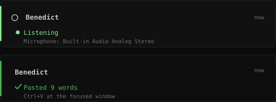
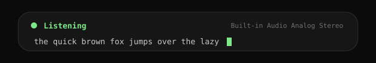
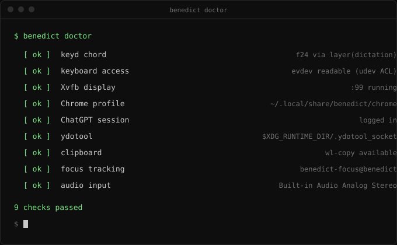
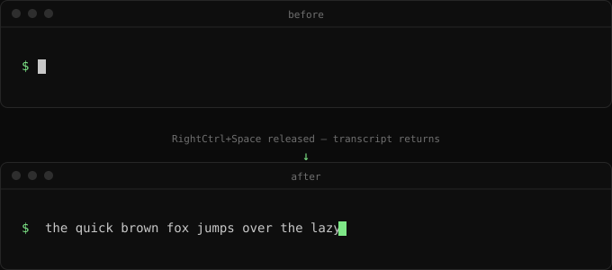

benedict
Push-to-talk dictation for Linux
ChatGPT's web dictation as the speech-to-text engine, at your cursor, from a single hotkey.
What it is
Hold RightCtrl+Space anywhere, speak, release. Benedict
drives a hidden Chrome instance (Xvfb) that is logged into
chatgpt.com, starts ChatGPT's dictation, and when you
release it pastes the transcript at your cursor. A notification shows
the state and the active microphone.
ChatGPT's web dictation is superb and, under a normal subscription, costs nothing extra. But using it meant opening a browser tab, dictating, copying the text, and pasting it back into whatever you were working on. Benedict removes that friction: hold a hotkey anywhere and the transcript lands at your cursor. No API credits, just the ChatGPT session you already pay for.
Nothing is ever sent as a chat message; the dictation text is read
from the composer and the composer is cleared after each use.
Transcripts are stored in
~/.local/state/benedict/last.txt and
history.jsonl.
How it works
RightCtrl+Space (hold)
│ keyd maps the chord to F24 and swallows it
▼
benedictd (systemd --user)
├── notifications + sound cues (notify-send, pw-play)
├── Xvfb :99 ─ Chrome ─ ChatGPT web (Playwright, dedicated profile)
└── wl-copy + ydotool paste (Ctrl+V, or Ctrl+Shift+V in terminals)
A small GNOME Shell extension (benedict-focus@benedict)
publishes the focused window class to
$XDG_RUNTIME_DIR/benedict-focus so Benedict can choose
Ctrl+V versus the terminal paste combo, and renders a
floating status pill (bottom center) with live state, the active
microphone, and the streaming transcript. If the extension is
unavailable, it falls back to Shift+Insert and desktop
notifications.
Demo
The full loop, from key press to pasted text. Mockups below follow the real on-screen output.



benedict doctor verifies every moving part.

Walkthrough
Requirements: Ubuntu GNOME on Wayland (GNOME 4x/5x) with PipeWire, Google Chrome, and a ChatGPT account.
git clone https://github.com/Anikate-De/benedict ~/dev/benedict
cd ~/dev/benedict
sudo ./scripts/setup.sh
The script installs xvfb, keyd,
wl-clipboard, libnotify-bin, installs the
keyd chord config, grants live input access via udev
uaccess ACLs, and installs the ydotoold and
benedict user services.
Then:
benedict doctor # verify everything benedict login --import # copy your ChatGPT session (recommended) systemctl --user enable --now ydotoold benedict benedict test-hotkey # hold RightCtrl+Space, expect press/release
No re-login is required. The GNOME focus extension loads on your next
login; until then paste uses the Shift+Insert fallback.
Usage
| Action | Result |
|---|---|
Hold RightCtrl+Space, speak, release |
Transcript is pasted at the cursor |
benedict doctor |
Diagnose missing pieces |
benedict status |
Print the daemon's current state as JSON |
benedict probe |
Dump ChatGPT page controls (when OpenAI changes the UI) |
benedict last |
Print the last transcript |
journalctl --user -u benedict -f |
Follow logs |
Configuration lives in
~/.config/benedict/config.toml; see the
readme
for all keys.
Roadmap
Still thinking about the roadmap. As and when I use it, more features will come.